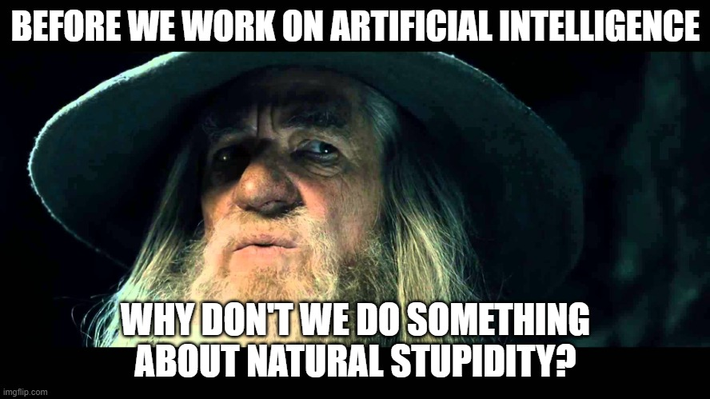

Training Program Outline
Python to PyTorch

General Guidelines
Welcome to our training/shampooing Program, let’s start with a few general guidelines
For every part of the training program the shampoee will be paired with a researcher that will be in charge on helping, mentoring and monitoring his progress
Do ask him for guidelines and advice when you need it
Shampoee will keep a live document with details on their shampooing process
Each shampoee will have a weekly 15 minutes meeting with the MMM to see how the training is going so far
Program Outline
Below is a general recommendation for the outline of the training program, note that the actual program should be changed for each trainee.
Infrastructure: (2 days)
Linux: (1 day)
https://www.tutorialspoint.com/unix/index.htm
Read all of “Unix / Linux for Beginners”
Make sure the trainee goes over exercises
Introduce him to tmux/screen (only so he knows it exists and its purpose, nothing more)
Git: (0.5 day)
Skip:
Git SSH
Why Git for your organization
Even if you are a git pro, there's always more to learn
Remember - pros use git from the CLI
Docker: (0.5 day)
https://www.udemy.com/course/docker-essentials/
Enroll to the free course
The Swarm and GUI parts are nor necessary (you may learn them if you want)
Python: (2-3 weeks)
Basic Python: (~week, for beginners only)
Read up to and including “Classes/Objects”
Important topics to emphasize:
Good coding practices
https://docs.python-guide.org/writing/style/
Python Environments (Recommended)
Read about the following concepts:
Virtual Environments
Pip
Anaconda
Advanced Python: (3 days, for non-beginners only)
Complete the Advanced Python Training.docx
Numpy: (2-3 days)
Read: Python Numpy Tutorial (CS231n)
It is recommended to open the jupyter notebook version.
Another resource: TutorialsPoint
Important topics:
Indexing and Slicing
Advanced Indexing
Broadcasting
Exercise: 100 Numpy Questions
Complete the exercises using the jupyter notebook without hints/solutions.
Pay attention to efficiency: use vector operations where possible (hint: almost always)
After you finish, submit your solutions for a CR.
Focus on these questions:
Questions up to 31, without questions 2, 4, 5, 23, 27, 28, 31
From questions 32-51: 35, 37-40, 45, 46, 50
From questions 52-100: 52-55, 58, 59, 61, 64, 65, 70-72, 74, 75, 83, 89
Exercise: Boids simulation (Skip)
Pandas: (2 days)
For beginners: Pandas Exercises
Sections: 1 - 5 (From each section, select one exercise / dataset)
Additional resource: TutorialsPoint
Final Exercise: (up to 5 days)
Before getting started on the final exercise, watch the two following videos talking about writing clean code (about 3 hours total):
https://youtu.be/2a_ytyt9sf8
If you MUST, you can skip the 5 minutes of physics at the beginning of each video
Shape Rendering - complete the exercise!
Computer Vision: (2 weeks)
Udacity UD810 / CS4495 (Videos: from Udacity)
Units to complete: 1 (all), 2 (all), 3 (all), 4 (all) , 6 (all), 7A, 9A, 9B
All other units are optional
Exercises:
PS0 - Do
PS1 (Hough) - Skip
PS2 - Skip
PS3 - Skip
PS4 - Do
PS5 - Skip
Machine Learning: (2 weeks)
More details are provided in the following Google Docs:
Machine Learning Training.docx
After each section, refer the trainee to the additional readings for some more in-depth details:
Jupyter notebooks and data:
Please make sure to make a local copy of all notebooks and datasets!
Deep Learning: (3 weeks course)
Follow the Deep Learning Training.docx document
Research Papers (1 week)
Papers Relevant to All Teams
RCNN
Fast RCNN
Faster RCNN
SSD
Papers Relevant to MopLe
EfficientNet + EfficientDet
DINO series (v1, v2, v3)
Papers Relevant to CV
DINO-DeTR
OCR Related Papers
DB
TRBA
Papers Relevant to Sherlock
ArcFace
RetinaFace
Owlv2
Additional Resources
Textbooks:
The Deep Learning Book
The Elements of Statistical Learning
An Introduction to Statistical Learning
Compute Vision: Algorithms and Applications - Richard Szeliski
Neural Networks and Deep Learning - Michael Nielson
Courses:
Stanford CS229
UCL/DeepMind Advanced ML and RL
Available online
MIT Introduction to Deep Learning
Other Resources:
Troubleshooting Deep Neural Networks
Unsupervised Feature Learning and Deep Learning
Montreal AI - Contains links to an endless number of papers/articles/resources on a wide range of topics